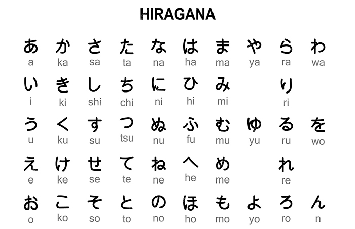

Hiragana (ひらがな) – El silabario japonés
El Hiragana es uno de los dos silabarios fonéticos empleados en la escritura japonesa. Se utiliza principalmente para palabras nativas japonesas, partículas gramaticales y terminaciones verbales. Cada símbolo representa un sonido (mora), lo que facilita el aprendizaje y la lectura.

- 46 caracteres básicos
- Se usa para escribir palabras japonesas y partículas
- Fundamental para el aprendizaje inicial
Ejemplo en Hiragana
わたしはがくせいです
watashi wa gakusei desu
Significado: Yo soy estudiante.